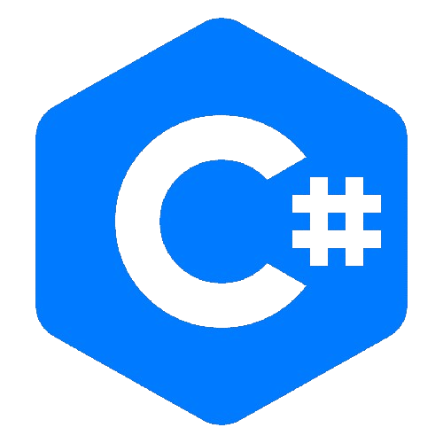
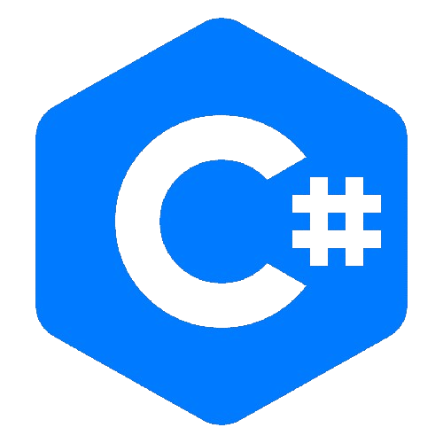
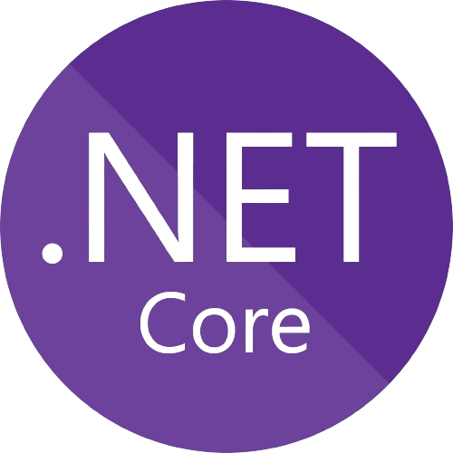
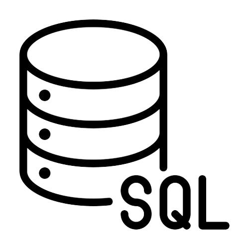
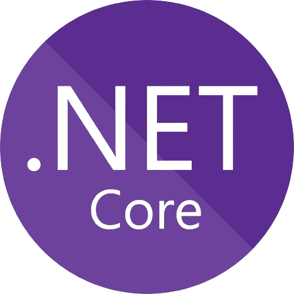
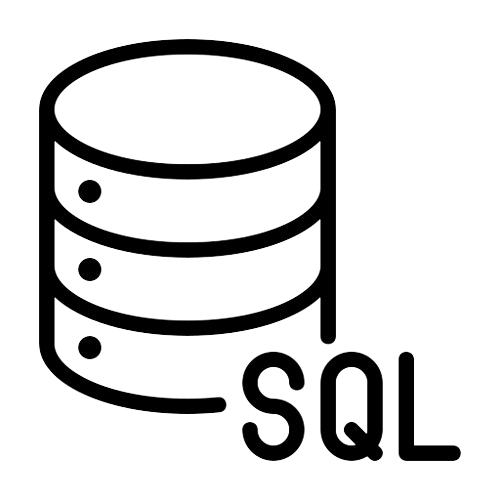

YouTube Content Creator
2020-current
Content creation online teaching people about how to code using HTML, CSS, JS.
Creates and maintains the behind-the-scenes functionality of websites and apps, managing databases and server operations. I also add a AI tool below like ChatGPT, It will soon be functional!
 


 





My diverse journey reflects an insatiable thirst for knowledge and a constant desire to learn. Sport played a crucial role in my development, instilling values such as self-discipline, respect, and strong teamwork. After obtaining my scientific hight school diploma, I delved into the rigors of scientific inquiry by earning a bachelor's degree in cellular biology, thereby acquiring compliance with standards and protocols. My two years of travel and work in Australia and Southeast Asia were a period rich in discovery and challenge. Confronted with the unknown, I honed my adaptability, autonomy, and communication skills. I then strengthened my perseverance and stress management by exploring the vast world of finance, gaining experience as an asset manager. This allowed me to grasp the breadth of interactions shaping our economic system and financial markets.
It was at this point that my path once again intersected with a domain I worshiped in my youth but had veered away from: computer science, specifically software development. I began with a full-stack web developer training program, followed by a fortunate stint as a junior software developer in finance. Subsequently, I obtained certification in .NET development, further solidifying my skills while working at Ctoutvert, an e-commerce company specializing in tourism, as a back-end developer.
Throughout my journey, I am driven by a continuous desire to learn and thrive in the field of computer science, where each challenge represents a new opportunity for professional growth. Today, I am fueled by a renewed passion for software development, viewing it as fertile ground for evolution and fulfillment. My commitment to lifelong learning and determination to advance in the field of computer science are powerful drivers guiding me toward exciting new horizons.
Content creation online teaching people about how to code using HTML, CSS, JS.

Marketing agency building websites and programming them from the ground up.

A small to large business organisation that helps facilitate advice and support.
I've put together a chatbot here which knows all my skills, work experience and has a copy of my CV/Resume. You can use it to ask questions about me to get a better idea of who I am and what I've done.
You can also download my resume here if you want to take a look at it. I'm currently looking for new opportunities so if you have a project you think I'd be a good fit for, please get in touch!
Download Resume